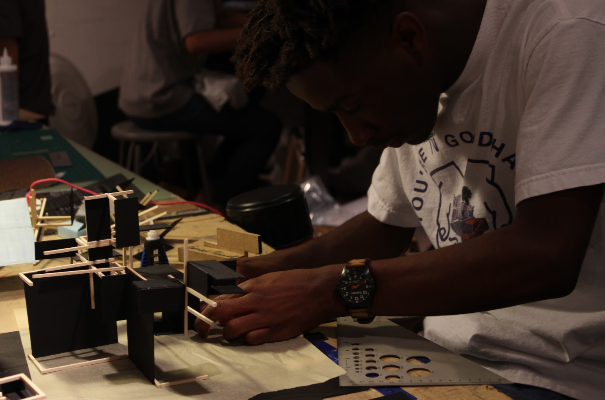
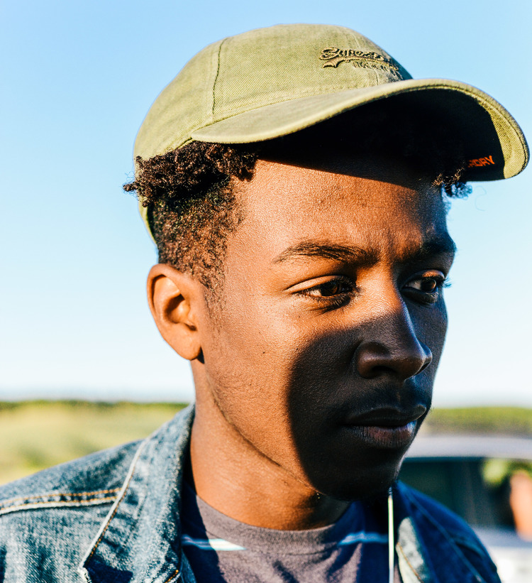
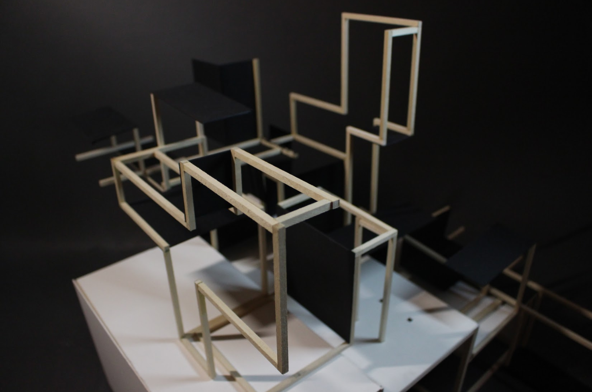

Short Bio
I am a first-year student in the highly touted Bachelor of Architecture program at Pratt Institute. I aspire to begin a minor in Film my second year. Aside from schooling, I am working alongside a fellow talented young brother at SCAD, Chad Roby, to create an immersive, experience-based design agency that showcases the work of recruited young artists and designers, but also offers their services as a group for creative endeavors of potential clients. Our first client approached us for creative direction of a clothing brand '1222 Austin', which I led the charge on, drafting the tech pack, designing the successive palettes, sourcing materials, and in post production, designing the client's website, doing product photography, and the lookbook.
A Product of Many Social Environments
I was born in Houston, Texas to a father with a background in engineering and a mother with a background in accounting. In my earlier formative years, I moved around a lot. Within two years of being born I ended up in Fairbanks, Alaska, and then Anchorage, Alaska. Soon after that, on my seventh birthday, I moved to Irvine, California. When I was nine, I moved to Baton Rouge, Lousiana, and then my freshman year of high school, I moved to New Orleans, Louisiana. That being said. Personally, it has been difficult to ever hone an authentic home identity for myself, and I often describe my background as a product of many different social environments. My mother's family is mainly from rural Lousiana and New Orleans, and my dad's side is from rural Mississippi, so the south is home to me at this point.
How did you first get interested in design?
I began to create art as a young child to represent my thoughts and observations in a nonverbal manner. The countless sights that I saw every day experiencing my early childhood in Alaska sparked my curiosity, and the best way my young mind processed that information was to draw things out. Through the years I moved around the states fairly often. Eventually, I had to handle the news of my mother's breast cancer diagnosis. Design became a large part of my life. I began to understand design as an experience rather than a discipline, and it has reflected in my work. The reason I design is to express my voice and exhibit my background in the context of our world in relation to the human condition.
Halfway through my sophomore year I went to the New Orleans stop of Kanye West's "Yeezus" tour. Reflecting on the concert, I picked up on the ramifications of a well executed sonic and visual experience. The set was beautifully designed. There was a mountain with a circular LED mass floating above it that occasionally read the narrative: Fighting, Rising, Falling, Searching, Finding. West donned a series of bejeweled luchadors. I wondered why he would set aside his identity but quickly realized that it was for something bigger than himself and his ego; it was for expression. The show was more like a night out at the opera than anything, chock full of Catholic imagery: the crucifix, Jesus, a statue of the Virgin Mary. This was in juxtaposition with firing pyrotechnics, lasers, and anonymous, robed female figures.

I distinctly remember the song "Hey Mama." He had created the track before his mother died, as a tribute to her raising him. Kanye fell to his knees, a fallen star. I thought back to the day my mom died. West neglected to perform the lyrics. As the instrumental ran, I felt a chill of reverence and nostalgia. The moment yielded a period of reflection. It brought me back to the simpler, earlier stages of my childhood, in which I would sit at the high stool by the counter and ask my mother a myriad of questions, often drawing out what she said. I accredit this moment with new beginnings and my distinct regard for expression. Knowing that I had a vision and had always been in touch with graphic design, I made the conscious decision to transform all of my negative energy into a positive energy toward something I wanted to do for the rest of my life: architectural design.
My voice is my most valuable asset. Through my experiences growing up in the world, I developed from an inquisitive child to the resolute creative I am becoming today. Winston Churchill once said, "We shape our buildings; after that they shape us." As people occupy a space, they begin to gather the quality of it. I think architecture is a poetic mesh of the indefinite nature of the arts and the ever-practical natural world. Design and architecture have presented themselves in my quotidian life because they surround me. From the spaces I inhabit to the water bottles I use, I study design every day. I develop a sense of spatial reasoning in the natural environment and learn to connect universal principles of the consumer culture with product design. Design is all around us. Therefore, one cannot merely escape it, but rather choose whether or not to recognize its implications.
Tell me about the work you've done?
As a student, much of the work I have engaged myself in thus far has been curriculum based. However, I have always believed in deconstructing the the design of the curriculum itself, in a way that allows for my work to be its entity and not a mere fulfillment of an assignment. Most recently, I have spearheaded the full creative direction of Austin-based clothing project, '1222'. Other than that, I have produced a series of low-poly images that explores the idea of a hero through the lens of different relationships to the onlooker, specifically portraying my father (blood), Kanye West (fame), and my colleague Karryl Eugene (friendship) as the selected heroes.

What are your biggest motivators?
My biggest motivators are the ones I love. Many people will claim that haters are their biggest motivators, and sure, being the underdog does inspire me. That being said, I have experienced a lot of personal suffering growing up as a young black male in a variety of unsettling communities, and through that, I have learned that the relationships that are genuine and kept are the most important thing we can hold on to in our relatively short time on this planet. I want to shine for my late mother, who passed of breast cancer. I want to shine for my cousin Rod, who I grew up neck and neck with and watched get arrested two short days after surprising me with a visit to my graduation. I want to shine for my paternal grandmother, who raised seven children almost entirely on her own in rural Mississippi in the mid 20th century. The world will eat you up and spit you out, so if you're not making a direct impact on the people that walked so that you could run, you're losing.
How do your friends and family feel about the work you've done?
My friends and family are supportive and inquisitive of the work that I have accomplished thus far. They take an interest, but most of them aren't well versed in the field. It can be frustrating sometimes because many people think design and art training is trivial and economically unproductive in the long run. In my experience, much of my close family has been wary of the economic outcome of my studies, which is a fair worry I must say.
What do you love most about working in design?
I love the process. Too often, people think about the finished product with no regard to the process. Good design makes the final product very intuitive. The operations in getting to that point is the beauty of design. It offers great depth in the practice of documentation and review of work. The design process is incredibly, and sometimes obsessively meticulous. Once you're clocked into this frame of mind, you see the world in a very visually logical manner that is hard to escape.
How can design be more accommodating to underrepresented populations of people?
I think design could be more welcoming in its outreach to marginalized and underrepresented people. There isn't nearly enough exposure for young people in our communities interested in design early in life. So I think the field should work toward community outreach at a greater scale. People in our communities should be introduced to design earlier in life by people in the field, which can sometimes seem very elitist from the outside looking in.

What are you working on right now, either for work or for yourself?
Right now, I am working towards the launch of the website for an experience-based design agency that I referenced earlier, and also beginning the production of a short film that I am very excited about. In school, I'd say the coolest thing I'm doing right now is studying section cuts in objects for Representation, and I'm pretty happy with my drawing sets for it.
Where do you see yourself in 5 or 10 years? Do you think you'll stay in design?
I see myself practicing in the field of design, but hopefully more toward my interest in furniture design and lighting fixtures as opposed to formal, firm-based architecture practice. My goal in architecture specifically, which is more long-term, is to bring affordable and sustainable design practices into the public housing sphere, creating a more beautiful environment for the inhabitants, conducive to productivity.
What advice would you give to folks from similar backgrounds who are in design or hoping to get into it?
I would tell them to go for it and never look back. At this point, design is becoming a more available and paramount route for our society. Go to the drawing board. It doesn't take the nicest equipment to get into. The beauty of the design is that it lives within us, as an innate tool waiting for use. Think every day. Walking down the street consider societal problems. Become a student of our world, and use design as the apparatus of the solution.